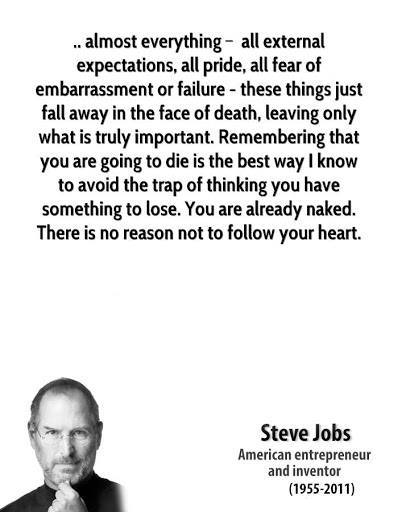

「思维留白，不拉缰绳，因为它只是思维，做最坏准备即可」
“我日渐衰老，也就更加明白，那种对未来的不断追求，那种来日的强大威力，那种日复一日对幸福的推延，那种前进的推迟，是多么的疯狂。 我终于学会了生活在此时此刻中，但是为时已然太晚，我明白了，眼下正照射着我的阳光，跟将来任何时候一样美丽，我也不再没完没了地为未来担忧。 但是在我年轻的时候，我是那种幻觉的牺牲品，出于这种或者那种原因，天性在我们身上维系着这一幻觉，以至于当我们身处六月份明媚无比的早晨时，我们会去想七月份的早晨，以为那时候的早晨将会更明媚灿烂。”

日常的修炼：“实际上，一旦我们对自我之外的人和事产生了真实的兴趣，隐藏在自我克制信条里的自我与世界的对立就消失了。这种兴趣让人感觉自己是生命之流的一部分，而不只是一个坚硬、单独的个体，像一个台球，除了碰撞，和其他实体没有任何关系”。
“好坏对错”，统统不重要，动手和厚皮肤最重要，这就是风格。